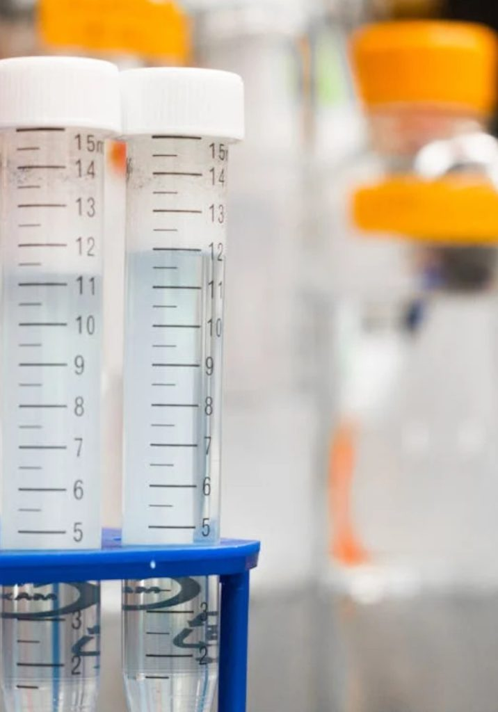

Síntesis y caracterización
Diseño y ejecución de rutas sintéticas de compuestos orgánicos e inorgánicos con caracterización espectroscópica.
Síntesis orgánica, físico-química y análisis instrumental. Innovación científica en materiales y procesos.

La Escuela Profesional de Química de la UNI forma profesionales con sólida visión científica para resolver retos tecnológicos en síntesis de productos, caracterización analítica, análisis de efluentes e impacto ambiental. Fue aprobada en 1968, autorizada en enero de 1969 y formalizada como escuela en diciembre de 1983 bajo la Ley 23733.
El plan 2018 exige proyecto de tesis (I–III) para egresar y emite certificaciones técnicas intermedias antes de terminar la carrera: Técnico Químico Analista, Técnico en Almacenamiento y Manipulación de Insumos Químicos, y Técnico en Gestión Ambiental.
Competencias y capacidades que desarrolla el bachiller.
Diseño y ejecución de rutas sintéticas de compuestos orgánicos e inorgánicos con caracterización espectroscópica.
Manejo de equipos avanzados (HPLC, GC-MS, Espectrofotometría UV-Vis, Absorción Atómica) para análisis cuali-cuantitativo.
Evaluación de efluentes, control de residuos peligrosos y protocolos de bioseguridad en laboratorios e industrias.
Formulación de proyectos de I+D en química de materiales, polímeros, catálisis y productos naturales.
Grupos y áreas donde participan docentes y estudiantes.
Extracción, purificación y determinación estructural de metabolitos secundarios con actividad biológica.
Cinética química, termodinámica de soluciones, catálisis heterogénea y electroquímica ambiental.
Remediación de suelos y aguas contaminadas, fotocatálisis solar y tratamiento de efluentes minero-industriales.
Síntesis de hidrogeles, biomateriales, polímeros conductores y nanomateriales de carbono.
Duración: 5 años (10 semestres) · Créditos aproximados: ~208
| Ciclo | Cursos principales |
|---|---|
| I–II | Química General I–II, Cálculo I–II, Física I–II, Biología General, Laboratorio de Química General |
| III–IV | Química Orgánica I–II, Química Analítica I–II, Fisicoquímica I, Cálculo III, Ecuaciones Diferenciales |
| V–VI | Química Inorgánica I–II, Fisicoquímica II–III, Análisis Instrumental I–II, Química Orgánica III |
| VII–VIII | Química Ambiental, Bioquímica, Optativa I–II, Proyecto de Tesis I–II, Prácticas Preprofesionales |
| IX–X | Proyecto de Tesis III, Optativas III–IV, Control de Calidad, Gestión de Laboratorios |
Dr. Javier Bernardo Enríquez Poma